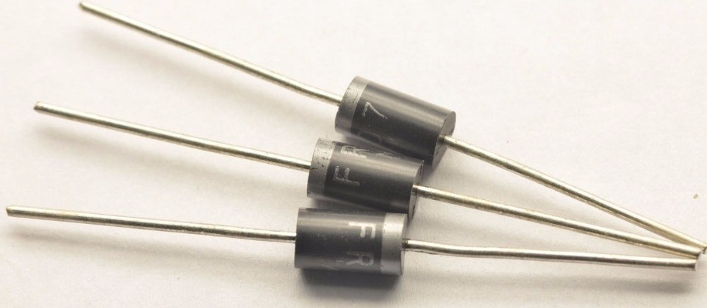
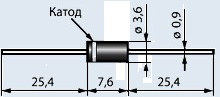

Диод FR207
Диод FR207 кремниевый быстровосстанавливающийся. Предназначен для преобразования напряжения с максимально допустимым средним прямым током 2 А.
Выпускаются в пластмассовом корпусе с гибкими выводами. Корпус: литой пластиковый корпус DO-15. На корпусе со стороны катодного вывода нанесена кольцевые метка.


Рис. 1 - Внешний вид и размеры диода FR207
Таблица 1
| Максимальное повторяющееся импульсное обратное напряжение, В | 1000 |
| Максимальное среднеквадратичное значение напряжения, В | 700 |
| Максимальное постоянное запирающее напряжение, В | 1000 |
| Средний прямой выпрямленный ток, А | 2,0 |
| Ударный прямой ток, А | 70 |
| Максимальное падение напряжения на открытом диоде, В | 1,3 |
| Постоянный обратный ток при номинальном обратном напряжении, мкА | 5,0 |
| Время обратного восстановления, нс | 500 |
| Емкость перехода диода, пФ | 40 |
| Температура окружающей среды, °C | -65…+150 |